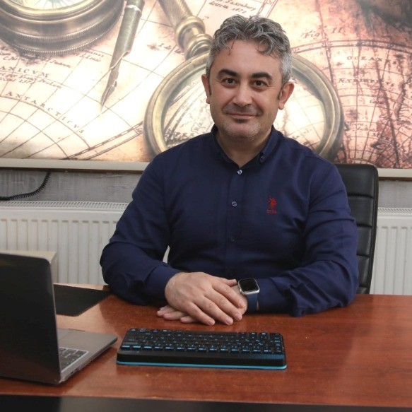

About Me
I was born in Kirikkale in 1980. I completed my primary and secondary education in Kirikkale.
I graduated from Uludag University in 2004 and started teaching physics.
I started my IT studies with HTML Web in 1999 and became a QA Tester
by participating in the training given by a bootcamp in 2 years ago.
I worked as a team leader, manager and organization manager in my teaching life.